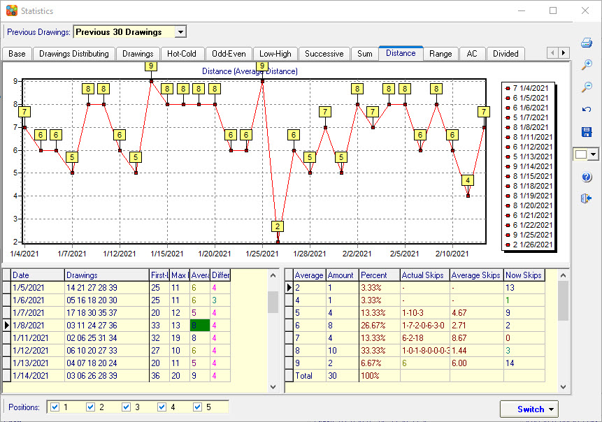

Distance Analysis |
Click
menu->Statistics->Distance to open theDistance
analysis windows.
Distance is the value of the
difference between the last number and first number.
First-Last Distance: The value of the difference between the last number and the first number. For example 11 15 17 30 41 51, the last number is 51, the first number is 11, so the First-Last Distance value is 51-11=40.
Max Distance: The values of the difference between the all adjacent two numbers. the largest value is Max Distance. For example 02, 05, 17, 19, 27, 31, the distance list : 3 (05-02=3), 12 (17-05=12), 2 (19-17), 8 (27-19), 4 (31-27=4), so the max distance is 12.
Average Distance: The values of the difference between the all adjacent two numbers, all values are added together and finally divide by the numbers amount. For example, 02, 05, 17, 19, 27, 31, the distance is 3 (05-02=3), 12 (17-05=12), 2 (19-17=2), 8 (27-19=8), 4 (31-27=4). (3+12+2+8+4)/5=5, so the distance average value is 5.
Different Distance: The
values of the difference between all adjacent two numbers, remove duplicate
values, and count the amount. For example: 02, 05, 08, 19, 27, 31, the distance
is: 3 (05-02=3), 3 (08-05=3), 11 (19-08=11), 8 (27-19=8), 4 (31-27=4), remove
duplicates value 3, so the different distance is 4.

Home
Page: http://www.samlotto.com
Support:support@samlotto.com
Copyright: © SamLotto Lottery Software
Team All rights reserved.